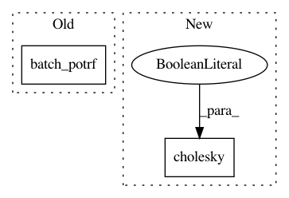

9d68b4ad8ba39fdf34dd11d79dd4168ab93d0108,gpytorch/utils/pivoted_cholesky.py,,woodbury_factor,#Any#Any#,83
Before Change
shifted_mat = shifted_mat + torch.eye(k, dtype=shifted_mat.dtype, device=shifted_mat.device)
R = torch.potrs(low_rank_mat, batch_potrf(shifted_mat))
return R
After Change
shifted_mat = shifted_mat + torch.eye(k, dtype=shifted_mat.dtype, device=shifted_mat.device)
R = torch.potrs(low_rank_mat, torch.cholesky(shifted_mat, upper=True))
return R
In pattern: SUPERPATTERN
Frequency: 4
Non-data size: 2
Instances
Project Name: cornellius-gp/gpytorch
Commit Name: 9d68b4ad8ba39fdf34dd11d79dd4168ab93d0108
Time: 2018-11-18
Author: cs15btech11043@iith.ac.in
File Name: gpytorch/utils/pivoted_cholesky.py
Class Name:
Method Name: woodbury_factor
Project Name: cornellius-gp/gpytorch
Commit Name: 9d68b4ad8ba39fdf34dd11d79dd4168ab93d0108
Time: 2018-11-18
Author: cs15btech11043@iith.ac.in
File Name: gpytorch/lazy/added_diag_lazy_tensor.py
Class Name: AddedDiagLazyTensor
Method Name: _preconditioner
Project Name: cornellius-gp/gpytorch
Commit Name: 9d68b4ad8ba39fdf34dd11d79dd4168ab93d0108
Time: 2018-11-18
Author: cs15btech11043@iith.ac.in
File Name: test/utils/test_linear_cg.py
Class Name: TestLinearCG
Method Name: test_batch_cg
Project Name: cornellius-gp/gpytorch
Commit Name: 9d68b4ad8ba39fdf34dd11d79dd4168ab93d0108
Time: 2018-11-18
Author: cs15btech11043@iith.ac.in
File Name: test/utils/test_linear_cg.py
Class Name: TestLinearCG
Method Name: test_batch_cg_with_tridiag